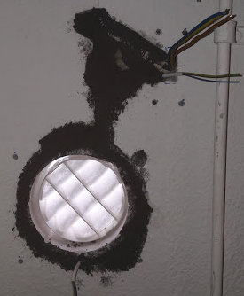
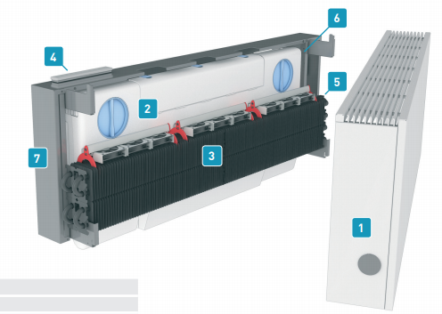
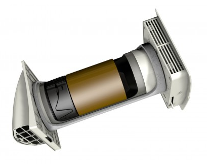
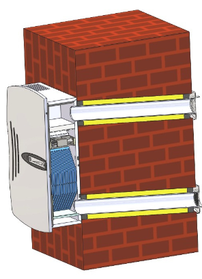

Decentrale Ventilatie
31 May, 2018
23:25
Alvorens maximaal te isoleren moet eerst de ventilatie verbeterd worden.
Het loggen van de CO2 waarden gedurende een aantal weken heeft aangetoond dat de CO2 waarden regelmatig tot ongewenste hoogte stijgt (> 800 ppm).
Omdat de keuze van de Lage Temperatuur Verwarming op Jaga radiatoren gaat vallen, is in principe de Climarad ventilatie (zit achter Jaga radiatoren van het type Fresh) de mooiste, maar duidelijk ook de duurste oplossing. Bovendien heb ik van een eigenaar vernomen dat de CO2 gestuurde bediening, duidelijk op de verkeerde momenten ongewenst lawaaierig is en dus na een week volledig is uitgeschakeld.
Daarom heb ik besloten zelf te gaan experimenteren met decentrale ventilatie. De keuze voor het eerste experiment is daarbij gevallen op de Marley MEnV 180. Op dit moment wordt er 1 gemonteerd in de woonkamer.
Het gat in de muur, met daarin het filter

| Volgend plaatje | Volgend plaatje |
Deze eerst unit zal voorzien worden van een aantal sensoren, waarbij de waarden iedere 10 seconden zal worden vastgelegd.
Binnen op 30 cm | Binnen op 0 cm | Buiten op 0 cm | Buiten op 30 cm |
Temperatuur | Temperatuur | Temperatuur | Temperatuur |
Rel. Vochtigheid | Rel. Vochtigheid | Rel. Vochtigheid | Rel. Vochtigheid |
CO2 |
|
|
|
Fijnstof |
|
| Fijnstof |
In eerste instantie zal de besturing handmatig gebeuren.
In een later stadium zal de besturing op een combinatie van factoren gebeuren. Hierbij moet je denken aan CO2, seizoen, temperatuurverschil, leefpatroon, en handmatig.
Waarschijnlijk is noodzakelijk om in de woonkamer 2 units te plaatsen, deze zullen dan expliciet volledig uit faze worden aangestuurd (dus de ene blaast en de andere zuigt)
Type | Debiet [m3/hr] | Efficiency [%] | Watt | 20 | 40 | 60 | 80 | 100 | Prijs | Opmerkingen |
Climarad 2.0 | 125 | >80% | 65 |
| 28 | 40 |
|
| 2500 |
|
Marley MEnV 180 | 15/25/37 | 80% | 7 | 22 | 37 |
|
|
| 250 |
|
BayernLuft | 5..20 | 90% | 6 | 38 |
|
|
|
| 400 |
|
Er zijn er veel meer, kijk vooral buiten Nederland, bijv Duitsland.
Het begint te komen in Nederland: https://www.installatie.nl/nieuws/decentrale-wtw-breekt-door/
Climarad
Prijslijst 2017: http://docplayer.nl/48276537-Climarad-prijslijst-2017.html
Wat technische gegevens:
http://www.jagapro.nl/sites/default/files/product/downloads/infofiche_strada%20fresh_NL.pdf
http://www.jagaventilatie.com/images/downloads/fresh/Technische%20brochure%20Strada%20Fresh_NL.pdf

Marley MEnV 180
https://www.hornbach.nl/shop/MARLEY-Warmtewisselaar-MENV-180/5715683/artikel.html
https://www.youtube.com/watch?v=ek2LxYQUv_w
https://www.hornbach.nl/data/shop/D04/001/780/491/216/343/5715683_Doc_08_NL_20170824234651.pdf

BayernLuft
http://manualzz.com/doc/4591307/montage--und-bedienungsanleitung
http://www.bayernluft.de/de/normanzeige.cgi?search_field=artikel&search_for=BV

Screen clipping taken: 01-Jun-18, 0:01
Created with Microsoft Office OneNote 2007
One place for all your notes and information